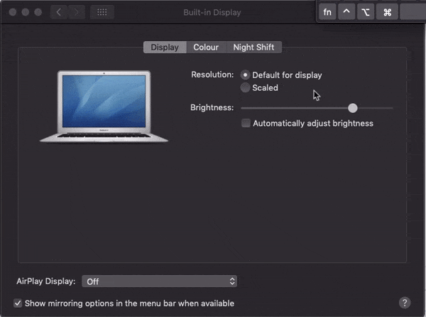

Creating Videos¶
This document will guide you in how to create video lessons for your course. Let's start with a tl;dr (but do read over it):
- Hardware: A good mic is extremely important, also use a pop filter and a mic arm
- Software: If possible, use screen recording software
- Screen Resolution: 16:9
- Video Length: 3-5 minutes is best, definitely stay below 10 minutes
- Tone: Your friendly neighborhood coder
Didactic Structure¶
Same as with your written content: follow the 3-step-teaching principle:
- Intro: Tell your students what information you will give them
- Main: Give them that info
- Recap: Tell them what information they just got
Screencast Recording Tips¶
- Recording Screencasts - Hardware, Software, Dos and Don'ts (by Wes Bos)
- Code School Screencasting Framework
- How To Record a Programming Screencast (by Scott Lilly)
- How To Create Screencasts That Don’t Suck (by Shawn Hesketh)
Examples Of Coding Screencasts¶
- Beginner's Guide to JavaScript (by Guil Hernandez)
- Highly legible coding examples even at small screen sizes, editor is full screen.
- What's the meaning of underscores (_ & __) in Python variable names? (by Dan Bader)
- Python Tutorial for Absolute Beginners #1 - What Are Variables? (by YK Suaishita)
- Python Tutorial for Beginners 8: Functions (by Corey Shafer)
- Note: Font size could be increased
- Heres how JavaScript "Named Params" Destructuring Works (by Wes Bos)
- Note: Stopping to show your face after the intro gives more space for your code
- Heres how React's New Context API Works (by Wes Bos)
- Note: Removing editor menu bars etc. avoids clutter and dating of the video
- Free Courses at Vuemastery.com
Hardware¶
Great audio quality is extremely important for quality screencasts. Having a good microphone makes up for most of that, but there are also a couple of other things to consider. Read about how to improve your hardware setup for audio recording in this section.
Microphone¶
If you are serious about creating quality screencasts, a good microphone is essential. Please contact us if you are building a course but you don't have a quality microphone equipment, since we may be able to support you in purchasing one.
Recommendation: "Audio Technica ATR 2100 USB" (or "Samson Q2U" in Europe). This is a low-price but high-quality microphone that operates over USB. It is small and simple to handle, yet dramatically increases the audio quality as compared to your built-in computer mic.
Microphone Adjustments¶
- Distance: Aim for 2-20cm (1-8 inches) between your mouth and the microphone.
- Direction: Aim to speak directly into the mic, not off to the side.
- Gain: Turn up your gain, but avoid it going too high.
Additional Equipment¶
Mic Arm: Sinc you will want to have your computer in front of you for coding, a mic arm can help to place the mic where you need it for a good recording outcome.
Pop-Filter: Plosives, such as "p", "t", "k", can come out surprisingly loud and disturbing in a spoken audio recording. A pop filter can help to reduce these pop sounds.
Headphones: In case that you like to hear your voice during the recording, a pair of headphones will be necessary. Use in-ear headphones to avoid any sound they produce from leaking into your recording.
Audio Foam: Using audio foam can reduce room echo. If you have a small room with fabric, such as a walk-in closet, that can also work as an uncomplicated alternative.
T-Shirt: No, this is not about getting dressed! Putting a T-Shirt under your laptop while recording can significantly reduce the clicking noise that your computer keys make.
Software¶
Most of your videos will be screen recordings. The important part to remember is that we want you to record both your video as well as audio in the highest resolution that makes sense. Large files are not a problem, and having a high video and audio quality allows for more precise editing (e.g. code zooms when necessary) without compromising the viewing experience. Below is a list of software solutions that help you with recording your screen while retaining video quality as well as your personal sanity:
- QuickTime Player (MacOS): Comes with the OS and is a simple way to get started. Price: Free
- iShowUInstant (MacOS): Allows to record specific windows and even set the size of a recording screen. Easy to start/pause/stop recordings. Low-cost option that makes already improves your screen recording experience. (I, Martin, use this one. Happy to answer questions about it) Price: $24
- OBS Studio (MacOs, Windows, Linux): Free and Open-Source software for video recording and live streaming. Check out these tutorials for Windows or for Linux Price: Free
- Screen Flow (MacOs): Professional screen recording software with a higher price tag and more features. Price: $129
- Camtasia (MacOS, Windows): The biggest and baddest (but in a good way). Includes a full-featured and easy-to-use editing studio as well. Haven't used it myself, but heard good things about it. Probably overkill, though, unless you're really into that. Price: €269.05
Additional Software
-
KeyCastr (MacOs): you can show key presses on screen, which helps viewers if you're using any keyboard shortcuts. The program allows you to display all key presses or only command keys, and is easy to toggle on and off.
-
Mousepose (MacOs): allows to highlight your cursor to better show clicks and cursor movements on your recording. Alternatively, you can increase your cursor size through your operating system’s accessibility settings.
Recording¶
Video Length¶
3-5 minutes: Keeping your videos short helps both you and your students to stay on track. Aim for 3-5 minutes per video, and definitely stay below 10 minutes. If you are explaining a complex concept that requires more time, split it up in logical chunks that are each below 10 minutes. Keeping our students engaged is paramount, so we want to give them the sense of achievement and completion when finishing a section as often as possible. Our brains are also much better at processing small chunks of information, and it's easier for students to go back and revisit a topic if the videos are on-point, clear, and easy to digest.
Shorter videos: You can also create shorter videos, e.g. to introduce a section in the course. Such videos can be only 1 minute long, yet help students to prepare for an upcoming new topic.
Screen Resolution And Framerate¶
Always record in a 16:9 ratio with a framerate of 60 FPS. Don't go below 30 FPS since cursor movements start looking jumpy and are then difficult to follow. To assure the right screen ratio, either set your screen resolution to 16:9 and record fullscreen, or create a defined 16:9 area on your screen and record only that section. Screen recording software can greatly help with both aspects.
Fullscreen-Recording: Your screen needs to be set to a 16:9 resolution (e.g. 720p HiDPI (= 1440p real resolution), 1080p or 720p). If your computer doesn't support a 16:9 screen resolution, there are a few hacks you can attempt:
- External Monitor: If you have access to an external monitor with the right aspect ratio, this can be a great way to go. It also allows you to use your laptop for notes etc. while recording.
- Hidden Display Options: On some MacBook models and MacOS versions, you can access additional resolutions with a small "trick". In your display preferences, hold "option" when clicking on "Scaled" to see previously hidden resolutions:

- SwitchResX: In case the above doesn't work for you, SwitchResX is a tool that allows setting user-defined screen resolutions on MacOS. Price: $14
General Info¶
Which Sections Should Have a Video?¶
Every Section should have at least one video. Screencasts offer students a different way to approach the material. They get exposure to a topic that is new for them, and the proof that, and how, it can be done. This makes a big difference in preparing the mind to accept new information.
I like it if every new concept that's introduced is shown at least once by the instructor. (Student Quote)
Video Screencasts are our online way of walking students through a concept and giving them the high-level understanding and confidence that it can be done.
Course Intro & Goodbye Video¶
Every course should have an intro video as well as a goodbye video. Make your students feel welcome and cared for. Introduce yourself as well as your course in the introduction video, and congratulate your students and point them to next steps in your goodbye video. Feel free to record yourself speaking. If you do so, remember to keep your background neutral. These videos can be very short (~1 min).
Section Intro Videos¶
Optionally you can create short section introduction videos (~1 min) that audio-visually explain what topics will be addressed in the upcoming course part. For these videos, you can use Google Sheets or PowerPoint to create simple and minimal slides that address the main points the section will be talking about.
Screencasts, Slides, Or Face Recording?¶
Most videos should be screencasts. You want to show your students how you code and solve challenges, and get them familiar and comfortable looking at a screen with code. Screencasts with voice narration are therefore the main type of videos you should create for your course.
That said, you can always loosen it up and increase retention and enjoyment for your students. You can use slides to introduce new topics and to create recaps at the end of a section. In the intro and goodbye videos, and also sometimes in between, if you feel comfortable with that, you can record yourself talking directly to your students, giving them encouragement.
Slides¶
When using slides for any of your videos please use our slides template and clone your slides from it. We suggest doing this in order to keep the style consistent across multiple courses.

Stick with this basic design. It'll help your students to focus on the essential information.
Video Creation Tips¶
Below are a selection of tips and tricks to keep in mind to amp up your video creation game and assure high-quality, educational screencasts.
Tips For Better Quality Screencasts¶
Use A Stable Table: Especially if you use your computer camera to record yourself talking, it is necessary that the setup is stable and doesn't wobble around.
Zen Screen: To help students focus and make you look more professional, avoid any screen clutter. You don't want distracting wallpapers or a cluttered Desktop, too many apps in your Dock, notifications to show up during recording (set the mode to "Do not disturb") etc. Cultivating a zen screen for your video recordings also makes inconsistencies between different videos less likely.
Timeless Videos: Avoid showing aspects of your OS that are highly dateable. That includes e.g. the MacOS dock, Windows Start Menu etc., as well as close buttons and of course the clock with date and time. The easiest way to avoid showing dateable items, is to use the full-screen mode of your text editor. If you need to show your desktop, set your clock to analogue or remove it entirely.
Relaxed Code: Give your viewers some time to see the code you just typed. Pausing for a moment helps students to absorb, type, or pause the video in the right spot without getting stressed. It helps to see the code for a few seconds before moving on.
Content-Focus: Minimize intro times and blabbering and talk about your the content right away. Students are here to learn effectively. Occasionaly jokes and break-out moments are encouraged and really lighten the load, but make sure that overall your videos are effective and content-focused.
Large Fonts: Use a large font in your editor. Bump up the font size. Usually, you will focus only on a small section of code at a time. Showing that specific section in a large font is absolutely preferrable to having a cluttered screen with lots of code in a small font.
Crisp Text: Avoid blurry text. This ties in with using a high resolution that allows you to zoom into specific sections of your code when editing the video.
High-Contrast Color Schemes: We want our videos to be as accessible as possible. Use high-contrast color schemes in your editor to make sure the code is as legible as possible.
Avoid "Smart Quotes": Don't use unicode "smart quotes", they cause syntax errors. Instead make sure that you use plain quotes in your code examples, also when creating them on slide decks.
Keep Your Errors: A tutorial teaches two things: the topic of the tutorial, as well as how to approach solving problems. If it isn't too distracting, keep the mistakes and syntax errors you make in where it makes sense and use them as an opportunity to teach your thought process for debugging. Your viewers will appreciate this as a learning opportunity.
Recap Your Videos: Remember the 3-step teaching process and make sure that you intro and recap the topics of your screencasts.
Avoid Swearing: Don't swear.
Tips That Allow Viewers To Follow-Along Easier¶
Orientation: Avoid switch tabs, windows, and applications too quickly. State clearly where you are and what you are doing. Context is very important to help absorb new information.
Point To Your Code: Help your viewers to keep track of what you are talking about by circling the code you want to point to with your cursor. You can enlarge the cursor in your OS's accessibility settings.
Avoid Shortcuts: Use your cursor and menus to create new files etc. Keyboard shortcuts are confusing when you can't see what has been clicked. If you must use keyboard shortcuts, limit it to common ones and use software to display the shortcut on screen. Preferrably you do everything on screen so that your viewers can follow along.
Scroll For Navigation: Show your scrolling when navigating within a file. Avoid jumping around or editing out the scrolling. This, again, makes it easier for viewers follow along and stay on track with your explanations.
Avoid (Background) Noise: Find a quiet spot for your recording. Audio quality is paramount for screen recordings. Avoid construction outside, pets, ceiling fans, creaky floors and chairs, as well as human-made distracting noises, such as coughing, mouth noises, etc.
Avoid Filler Words: Attempt to cut down on using filler words, such as (ahem, uhm, like, so, you know, etc.) Some can be edited-out, but if you use them frequently, it is a ginormous effort to do so. Avoiding to use filler words makes you appear much more competent and makes your content easier to follow.
Avoid Visual Distractions: If you are recording yourself speaking, use a neutral background that isn't distracting for your viewers.
Record Small Chunks: Recording smaller chunks will keep your quality high. When recording too much in one take, you might get tired and inattentive without noticing it.
Tutoring Instead Of Presenting: Imagine that you are speaking to only one person. Students should feel like they are in a mentor-student relationship, rather than sitting in a room full of people in an auditorium or at a conference.
Tips For Easier Editing¶
Silence While Typing: If you are typing a longer section of code that doesn't need explanation on-the-go, avoid talking while typing. The silence makes it easy to edit out or speed up when editing.
Title Your Files: Use double-digit numbering in combination with the screencast topic's title for naming your video files, e.g.: 01_variables.mov.
Clarify Mistakes During Recording: When you realize that an explanation isn't working well or when you make a mistake you want to correct, first stop and mention that you'll redo this section. Then pause for a few seconds, undo what you did to get back to the start, pause again, and then start again. This helps to identify necessary edits and makes it easier to get good cuts.
Add Editing Notes: Add a README file with notes for editing to your recorded screencasts. This document should mention:
- At what timestamp in which video are mistakes--to quicker find and cut them when editing
- When there should be a screen overlay (e.g. when accidentally mis-naming something while talking) and what should be on the screen overlay
Upload: Upload the finished recordings to your dedicated shared folder to allow us to give you feedback and add necessary edits.